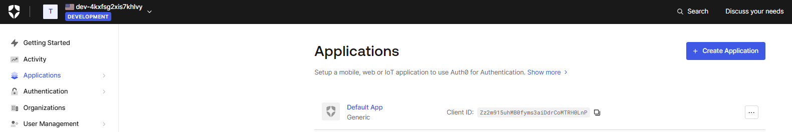
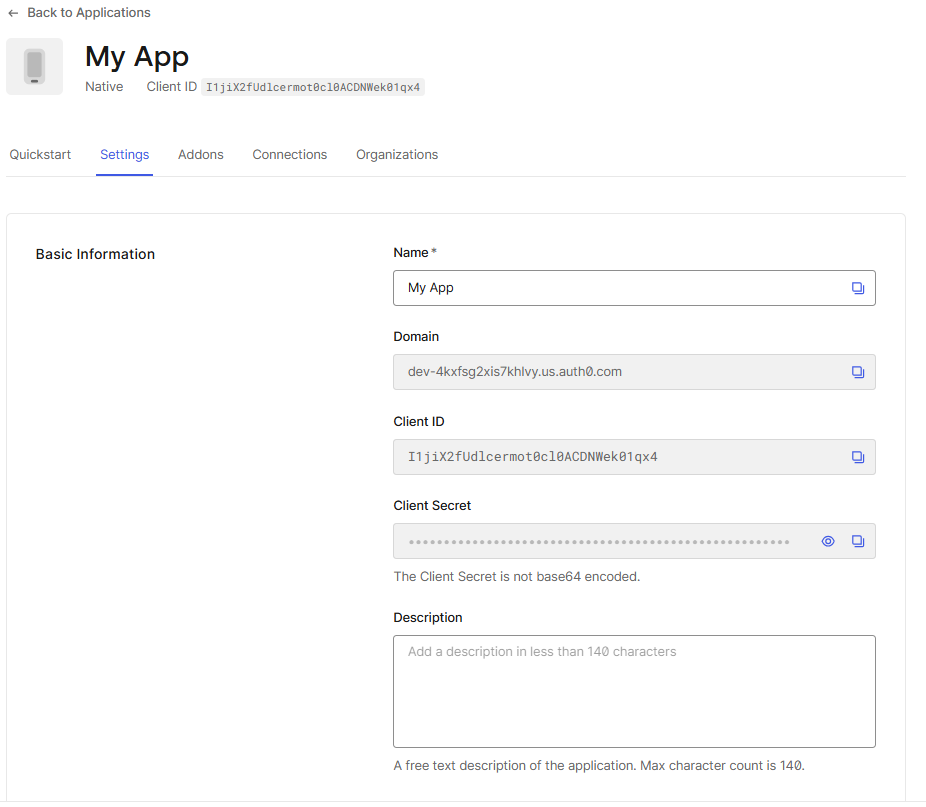
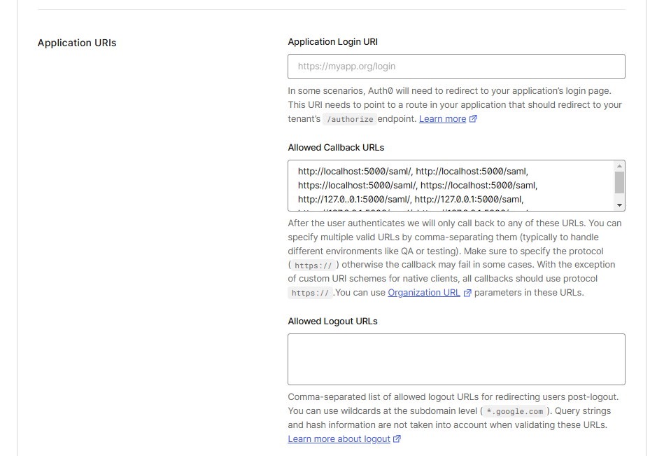
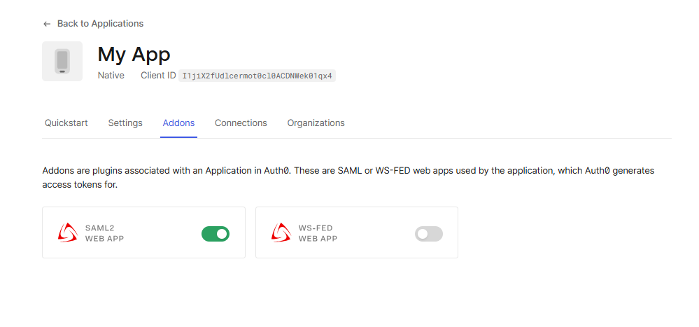
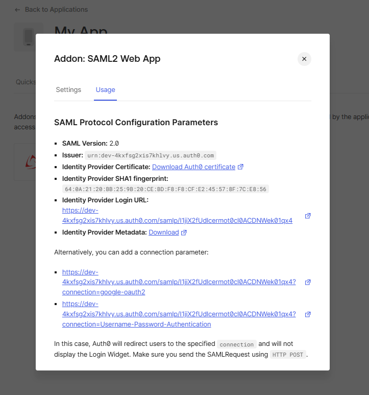
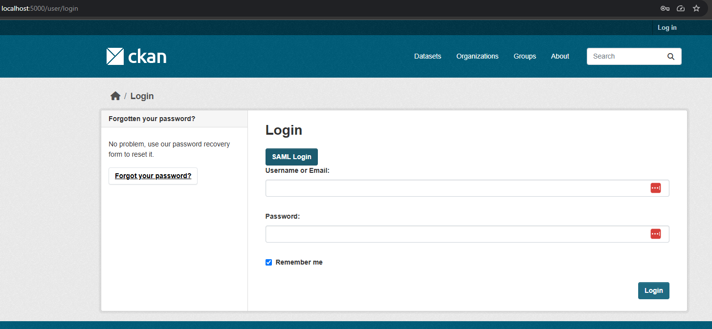
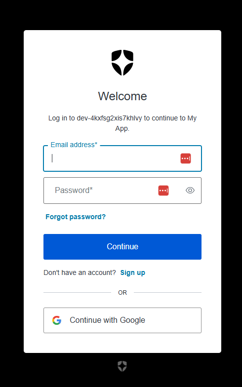

Usage
Basic usage
This is the example of setting up of the extension against Auth0 authentication and authorization platform.
-
Register and log in to Auth0
-
Go to the Applications section 
-
Create a new app and switch to the Settings tab to set necessary configs  
-
Switch to the Addons tab and enable SAML2 WEB APP 
-
Get all necessary IdP configs 
by downloading Identity Provider Metadata
<EntityDescriptor entityID="urn:dev-4kxfsg2.us.auth0.com" xmlns="urn:oasis:names:tc:SAML:2.0:metadata"> <IDPSSODescriptor protocolSupportEnumeration="urn:oasis:names:tc:SAML:2.0:protocol"> <KeyDescriptor use="signing"> <KeyInfo xmlns="http://www.w3.org/2000/09/xmldsig#"> <X509Data> <X509Certificate>4VDqTySXJSeAdNI4HEGux</X509Certificate> </X509Data> </KeyInfo> </KeyDescriptor> <SingleLogoutService Binding="urn:oasis:names:tc:SAML:2.0:bindings:HTTP-Redirect" Location="https://dev-4kxfsg2.us.auth0.com/samlp/I1jiX2fUdlcermot0cl0ACDNWek01qx4/logout"/> <SingleLogoutService Binding="urn:oasis:names:tc:SAML:2.0:bindings:HTTP-POST" Location="https://dev-4kxfsg2.us.auth0.com/samlp/I1jiX2fUdlcermot0cl0ACDNWek01qx4/logout"/> <NameIDFormat>urn:oasis:names:tc:SAML:1.1:nameid-format:emailAddress</NameIDFormat> <NameIDFormat>urn:oasis:names:tc:SAML:2.0:nameid-format:persistent</NameIDFormat> <NameIDFormat>urn:oasis:names:tc:SAML:2.0:nameid-format:transient</NameIDFormat> <SingleSignOnService Binding="urn:oasis:names:tc:SAML:2.0:bindings:HTTP-Redirect" Location="https://dev-4kxfsg2.us.auth0.com/samlp/I1jiX2fUdlcermot0cl0ACDNWek01qx4"/> <SingleSignOnService Binding="urn:oasis:names:tc:SAML:2.0:bindings:HTTP-POST" Location="https://dev-4kxfsg2.us.auth0.com/samlp/I1jiX2fUdlcermot0cl0ACDNWek01qx4"/> <Attribute Name="http://schemas.xmlsoap.org/ws/2005/05/identity/claims/emailaddress" NameFormat="urn:oasis:names:tc:SAML:2.0:attrname-format:uri" FriendlyName="E-Mail Address" xmlns="urn:oasis:names:tc:SAML:2.0:assertion"/> <Attribute Name="http://schemas.xmlsoap.org/ws/2005/05/identity/claims/givenname" NameFormat="urn:oasis:names:tc:SAML:2.0:attrname-format:uri" FriendlyName="Given Name" xmlns="urn:oasis:names:tc:SAML:2.0:assertion"/> <Attribute Name="http://schemas.xmlsoap.org/ws/2005/05/identity/claims/name" NameFormat="urn:oasis:names:tc:SAML:2.0:attrname-format:uri" FriendlyName="Name" xmlns="urn:oasis:names:tc:SAML:2.0:assertion"/> <Attribute Name="http://schemas.xmlsoap.org/ws/2005/05/identity/claims/surname" NameFormat="urn:oasis:names:tc:SAML:2.0:attrname-format:uri" FriendlyName="Surname" xmlns="urn:oasis:names:tc:SAML:2.0:assertion"/> <Attribute Name="http://schemas.xmlsoap.org/ws/2005/05/identity/claims/nameidentifier" NameFormat="urn:oasis:names:tc:SAML:2.0:attrname-format:uri" FriendlyName="Name ID" xmlns="urn:oasis:names:tc:SAML:2.0:assertion"/> </IDPSSODescriptor> </EntityDescriptor>
-
Configure main settings file
settings.json. It may be done manually inside the file or through the CKAN configuration file using variables with prefixckanext.saml.settings.substitution. The example of the settings.json file is below:
{ "strict": true, "debug": true, "sp": { "entityId": "<SP_ENTITY_ID>", "assertionConsumerService": { "url": "<SITE_URL>/sso/post", "binding": "urn:oasis:names:tc:SAML:2.0:bindings:HTTP-POST" }, "singleLogoutService": { "url": "<SITE_URL>/slo/post", "binding": "urn:oasis:names:tc:SAML:2.0:bindings:HTTP-Redirect" }, "NameIDFormat": "urn:oasis:names:tc:SAML:2.0:nameid-format:transient", "x509cert": "<SP_CERT>", "privateKey": "<SP_PRIVATE_CERT>" }, "idp": { "entityId": "<IDP_ENTITY_ID>", "singleSignOnService": { "url": "<SSO_URL>", "binding": "urn:oasis:names:tc:SAML:2.0:bindings:HTTP-Redirect" }, "singleLogoutService": { "url": "<SLO_URL>", "binding": "urn:oasis:names:tc:SAML:2.0:bindings:HTTP-Redirect" }, "x509cert": "<CERT>" }, "security": { "requestedAuthnContext": false, "nameIdEncrypted": false, "authnRequestsSigned": true, "logoutRequestSigned": false, "logoutResponseSigned": false, "signMetadata": false, "wantMessagesSigned": false, "wantAssertionsSigned": false, "wantNameId" : true, "wantNameIdEncrypted": false, "wantAssertionsEncrypted": false, "signatureAlgorithm": "http://www.w3.org/2001/04/xmldsig-more#rsa-sha256", "digestAlgorithm": "http://www.w3.org/2001/04/xmlenc#sha256" }, "contactPerson": { "technical": { "givenName": "technical_name", "emailAddress": "technical@example.com" }, "support": { "givenName": "support_name", "emailAddress": "support@example.com" } }, "organization": { "en-US": { "name": "sp_test", "displayname": "SP test", "url": "http://sp.example.com" } } }
-
SAML settings in CKAN config file (e.g. ckan.ini or production.ini)
## ckanext-saml ckanext.saml.unconditional_login = true ckan.saml_custom_base_path = %(here)s/saml ckanext.saml.metadata.base_path = %(here)s/saml ckan.saml_use_https = true ckanext.saml.settings.dynamic = true ckanext.saml.session.ttl = 2_592_000 ckanext.saml.reactivate_deleted_account = true ckanext.saml.settings.substitution.SITE_URL = %(ckan.site_url)s ckanext.saml.settings.substitution.SP_ENTITY_ID = %(ckan.site_url)s ckanext.saml.settings.substitution.IDP_ENTITY_ID = urn:dev-4kxfsg2.us.auth0.com ckanext.saml.settings.substitution.SSO_URL = https://dev-4kxfsg2.us.auth0.com/samlp/I1jiX2fUdlcermot ckanext.saml.settings.substitution.SLO_URL = https://dev-4kxfsg2.us.auth0.com/samlp/I1jiX2fUdlcermot ckanext.saml.settings.substitution.CERT = MIIDHTCCAgWgAwIBAgIJMpgtCcFJo8dsdff...VDqTySXJSeAdNI4HEGux ckanext.saml.settings.substitution.SP_PRIVATE_CERT = MIIEvgIBADANBgkqhkiG9w0B...kYLQbPdaq+Bv7keWLz -
Log in to CKAN using SAML  
-
Finally you are there with secure access.